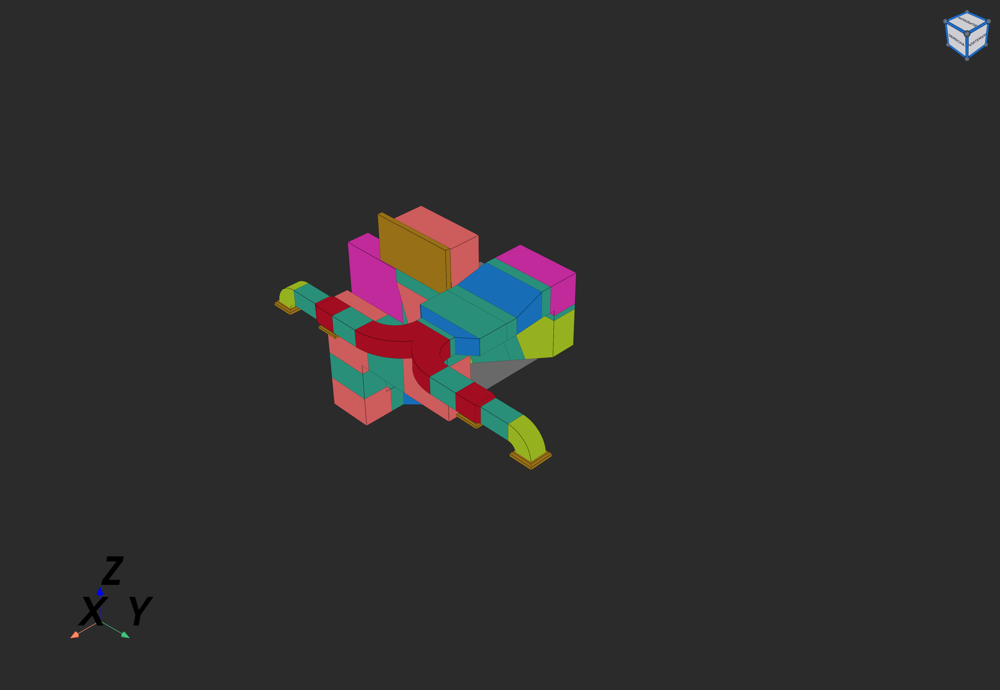
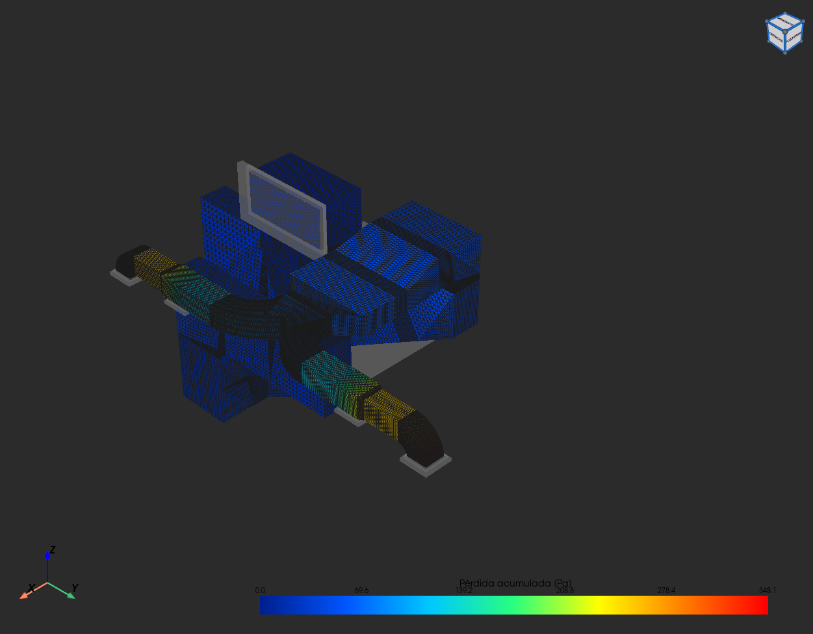
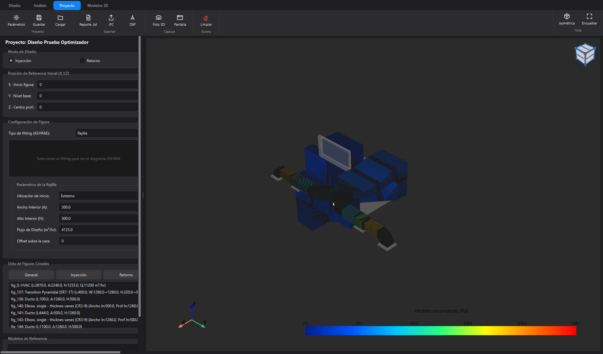

Evidencia, no promesas.
Capturas reales del sistema, sin retoques — selecciona cualquiera para ampliarla.
Modelado pieza a pieza, con rigor de CAD
Cada codo, transición o rejilla sale de una biblioteca basada en el estándar ASHRAE — la norma de referencia mundial en climatización. Las dimensiones se propagan automáticamente entre piezas conectadas.
- Biblioteca completa: codos, TEE, transiciones, difusores, dampers, bocinas…
- Asistentes de diseño y calculadora de parámetros integrados
- Editar, reemplazar, deshacer — flujo de trabajo real de ingeniería

La física no se estima: se calcula y se ve
Mientras construyes, cada tramo se resuelve con las ecuaciones del manual ASHRAE. El mapa de presión colorea la red y expone dónde se disipa la energía — la ruta crítica se identifica automáticamente.
- 36 tablas oficiales digitalizadas, interpoladas en tiempo real
- Mapa de presión + flujo de partículas animado
- 3 métodos de optimización automática de dimensiones

Opera sobre el edificio real, no sobre un esquema
Fluxio abre los modelos BIM con que la industria proyecta y construye (IFC/STEP): aquí, una sala eléctrica real de más de 15 000 elementos, filtrado en vivo, lista para el trazado de ductos.
- Importación IFC/STEP con caché — la segunda carga es instantánea
- Detección de choques entre ductos y estructura (clash)
- Medición milimétrica sobre el modelo y cortes en 3 ejes

No es un prototipo: es una herramienta terminada
Interfaz estilo Autodesk Inventor con tema oscuro, persistencia completa de proyectos, y exportación a los formatos que usa la industria — construido a medida en su totalidad.
- Cinta de comandos, panel editable y cubo de navegación 3D
- Exporta a IFC (openBIM) y planos CAD (DXF)
- Reporte dimensional y fotos 3D en alta resolución
